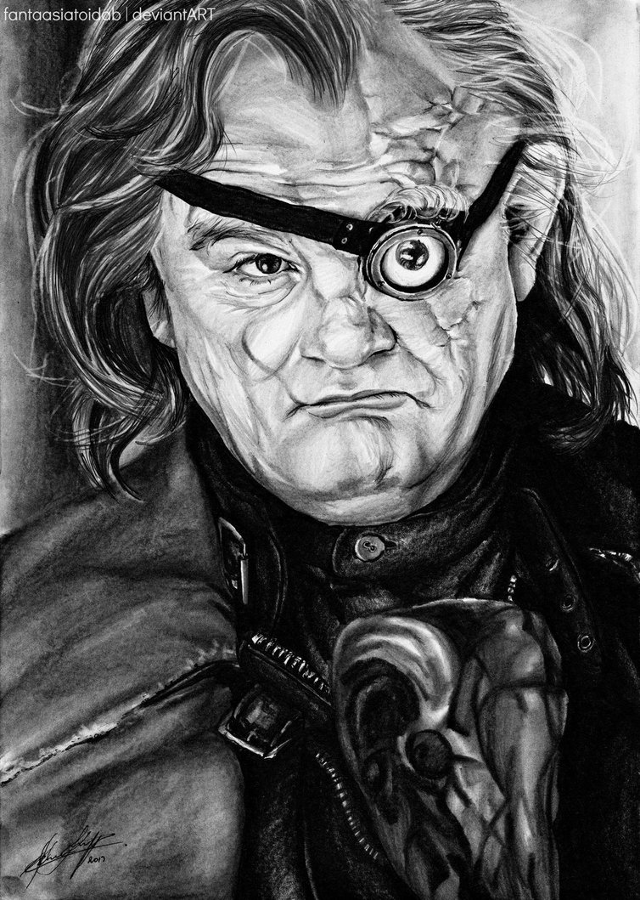

Tom Jedusor
Antagoniste5 Blessures
- La prophétie : accomplir votre _Quête_ ne termine pas la partie si _Harry Potter_ est toujours en vie.
- Horcruxe : tous les _Personnages_ que vous achevez vous permettent de résister à une mort définitive supplémentaire, peut se cumuler plusieurs fois.
Feudeymon (1 utilisation / partie) : tous les _Personnages_ subissent 1 blessure, si cela achève un _Personnage_, le sort se relance autant de fois que cela se produit.
Il n’y a pas de bien ni de mal, il n’y a que le pouvoir, et ceux qui sont trop faibles pour le rechercher…
Peter Pettigrow
Antagoniste4 Blessures
- Main d'argent : +2 d'attaque tant que vous n'avez pas d'_Arme_. S'il vous est possible d'achever un _Protagoniste_ après votre déplacement, vous devez le faire, sans quoi vous subissez une _Blessure_.
Lâcheté sacrificielle : peut s'infliger une Blessure pour fuir une attaque, ne peut le faire au _SdM_.Animagus : Vous activez / annuler votre transformation en _Queudver_, votre tour est fini.- Queudver : Au début de votre tour, vous pouvez regarder la carte _Lieux_ la plus proche de vous. Déplacez qu'avec le d4, -2 de portée adverse, vous ne pouvez attaquer d'autres _Personnages_.
Ta dévotion n'est rien d'autre que de la couardise. Tu ne serais pas ici si tu avais un autre endroit où aller.
Quirinus Quirrell
Antagoniste5 Blessures
Esprit influençable (1 utilisation / partie) : vous pouvez oublier votre _Quête_ afin de vous consacrer à celle d'un autre _Personnage_, avec son accord. Sa _Quête_ devient également la vôtre. Néanmoins, vous ne gagnez que la moitié des points de cet accomplissement.Possession : vous pouvez accueillir l'esprit d'un _Personnage_ décédé dans votre corps. Il peut toujours accomplir sa _Quête_ et vous la vôtre. Ceci vous inflige 1 _Blessure_ à chaque début de votre tour, tous les 2 tours. Désormais, _Esprit influençable_ vous donne l'intégralité des points d'accomplissement.- "Cessez de vous moquer de moi !" : gagnez +2 d'attaque et +1 de défense tant que vous êtes le _Personnage_ en vie le plus de blessé de la partie.
Vous êtes un peu trop curieux pour vivre bien longtemps, Potter.
Dolores Ombrage
Antagoniste4 Blessures
Incarcerem (1 utilisation / tous les 3 joueurs dans la partie) : un autre _Personnage_ ciblé devient _Entravé_ jusqu'au début de son prochain tour.- Corruptible : les défenseurs peuvent vous payer 3 points d'_Equipements_ pour éviter l'attaque.
Sous-secrétaire d'État auprès du Ministère de la Magie (1 utilisation / tour) : A la place de piocher une carte _Retournement_ quand vous le pouvez ou en payant 7 points d'_Equipements_, vous pouvez édicter un _Amendement du Ministère_. Les _Amendement du Ministère_ ne s'appliquent pas à vous. Vous pouvez décider d'abroger un _Amendement du Ministère_ à tout moment.
J’ai hâte de vous connaître tous et je suis sûre que nous deviendrons vite de très bons amis !
Fenrir Greyback
Antagoniste6 Blessures
- Lycanthropie : Tous les 4 tours, après votre déplacement, vous vous transformez en _Loup-Garou_ jusqu'au début de votre prochain tour.
Préparation sélène : Vous pouvez avancer jusqu'à deux cases supplémentaires lors de votre déplacement précédant votre _Lycanthropie_.- [Chef des rafleurs : lors d'une attaque réussie, vous pouvez voler un objet équipé à votre cible plutôt que lui infliger une blessure - TODO].
Tu sais à quel point j’aime les enfants, Dumbledore.
Bellastrix Lestrange
Antagoniste5 Blessures
- Cruauté : chaque attaque consécutive envers un personnage vous donne +1 d'attaque, peut se cumuler jusqu'à 2 fois. Changer de cible fait repartir le bonus de zéro.
- Duelliste exceptionnelle : Si vous avez attaqué avec succès au tour précédent, vous gagnez +2 d'attaque, +2 de défense et annuler l'effet d'_Orgueil mal placé_.
- Orgueil mal placé : si vous ne réussissez pas une attaque ou échouer une défense, baisse votre bonus de _Duelliste exceptionnelle_ de 2. Peut se cumuler jusqu'à vous conférer -2 d'attaque et -2 de défense.
- Tortionnaire : Infligez des blessures lors d'une attaque vous octroie une unité de _Sang_.
J'ai tué Sirius Black ! J'ai tué Sirius Black ! J'ai tué Sirius Black ! Essaies de m'attraper !
Gripsec
Neutre4 Blessures
- Sadisme : +1 d'attaque contre un _Personnage_ plus blessé que lui.
- Expertise gobeline : lors d'un achat auprès du _Marchand d'or_, si la valeur de(s) l'objet(s) échangé(s) est en-dessous de la votre, vous pouvez annuler l'échange, l(es)'_Equipement(s)_ retourne(nt) sur le dessus de la pile.
- Ancien employé : vous pouvez retirer vos objets de la _Banque de Gringotts_ sans avoir tirer cette carte _Lieux_. Virtuellement, vous avez 2 emplacements de carte en main supplémentaires.
Les gobelins et les elfes ne sont guère accoutumés à la solidarité ou au respect...
Aragog
Neutre7 Blessures
- Venin acromantulère : après une attaque réussie, jusqu'à la fin de son prochain tour, la cible ne se déplacera qu'avec le d3 et ses bonus d'attaque et de défense seront réduits à la moitié inférieure.
- Ponte de Mosag : lors d'un achat auprès du _Marchand d'or_, si la valeur de(s) l'objet(s) échangé(s) est en-dessous de la votre, vous pouvez annuler l'échange, l(es)'_Equipement(s)_ retourne(nt) sur le dessus de la pile.
Patriache de colonie : Vous pouvez sacrifier des _Membres de la couvée_ pour modifier le calcul lors d'un combat, 1 _Membre de la couvée_ sacrifié vous rapporte +1 d'attaque ou de défense, au choix.- Cannibalisme opportun : si vous êtes au _SdM_ avec des _Membres de la couvée_ encore actifs, vous décédez directement.
Des humains. [...] Alors, tuez-les. J'étais en train de dormir.
Gilderoy Lockhart
Neutre4 Blessures
Brackium Emendo (1 utilisation / 2 tours) : ciblez un _Personnage_ à votre portée, et lancez les deux dés. Si le résultat est au moins 6, la cible est soigné d'une Nlessure, sinon, son _Arme_ devient inactive pendant 2 tours.- Escroc : Vous pouvez gagnez par l'accomplissement d'une quête d'un _Personnage_ affecté par votre compétence _Oubliettes_. Vous ne cumulez pas de points supplémentaires si vous accomplissez plusieurs quêtes en même temps grâce à cette compétence.
Oubliettes : Pendant votre tour, ciblez un autre _Personnage_, cela ne peut pas être deux fois la même cible consécutivement. Lancez les deux dés.
Et si j’avais voulu vous en empêcher, je n’aurais eu aucun mal à le faire.
Peeves
Neutre1 Blessure
- Amortel : vous ne pouvez être tué. Si vous subissez une Blessure alors que vous êtes au _SdM_, vous ne pourrez pas vous déplacer au prochain tour.
- A peine physique : -3 d'attaque.
- Invisibilité : -2 de portée pour vos attaquants, on ne peut vous cibler directement que ce soit avec un _Consommable_ ou une compétence d'_Arme_ ou de _Personnage_. Attaquer quelqu'un vous annule l'_Invisibilité_ jusqu'à votre prochain tour.
Esprit du chaos (1 action / tour global de jeu)
Je dirai quelque chose quand on me dira s’il te plaît. [...] QUELQUE CHOSE ! Ha ! Ha ! Ha ! Je vous avais prévenu.
Garrick Ollivander
Neutre4 Blessures
- Maître des baguettes : dès l'équipement, vous débloquer la compétence _Maîtrise_ des _Armes_ de type baguettes.
Mémoire eidétique (1 utilisation / tour) : une fois qu'une pile de défausse vient remplacer une pile actuelle, vous êtes libre de consulter les 5 premières cartes de cette nouvelle pile.Conjureur doué (1 utilisation / 2 tours) : vous pouvez piocher une carte _Consommable_.
La baguette choisit son sorcier.
Mondungus Fletcher

Neutre4 Blessures
Récupérateur (1 utilisation / tour) : au lieu d'attaquer, vous pouvez récupérer la dernière carte dans la défausse des _Consommables_.- Refourgueur : vos _Consommables_ valent 1 point d'_Equipement_ et peuvent être vendus en tant que tels.
Réseau d'informateurs intéressés : Pendant votre tour, vous pouvez sacrifier 2 points d'_Equipement_ pour regarder la carte _Personnage_ ou _Quête_ d'un autre _Personnage_. Peut être fait plusieurs fois par tour.- Négociateur : pour chaque achat auprès du _Marchand d'or_, vous pouvez lancer les deux dés, si le résultat est supérieur à 4, cela ne vous coutera que 2 points d'équipements.
- Couardise : vous ne pouvez attaquer si vous êtes à une blessure du seuil de la Mort.
C’est Mondingus, il a été arrêté et envoyé à Azkaban ! Il s’est fait passer pour un Inferius au cours d’une tentative de cambriolage…
Harry Potter
Protagoniste5 Blessures
- La prophétie : accomplir votre quête ne termine pas la partie si _Tom Jedusor_ est toujours en vie.
Accio (1 utilisation / 2 tours) : Pendant votre tour, nommez une carte de la pile _Consommable_ ou _Equipement_, si celle-ci se trouve dans les 3 prochaines cartes, récupérez-la. Puis, placez les cartes révélées sous le dessous de la pile.Expelliarmus (1 utilisation / 2 joueurs dans la partie) : lors d'un combat, toutes les _Armes_ équipées de l'adversaire sont inactives avant le calcul. Si le résultat du combat est en la faveur d'_Harry Potter_, toutes les _Armes_ équipées de l'adversaire lui reviennent.
Je suis un... quoi ?
Severus Rogue
Protagoniste5 Blessures
- Agent double : peut se faire passer pour un Antagoniste tout le long de la partie (comme avec l'effet de la _Glace à l'ennemi_ par exemple) et utiliser ce qui leur est exclusif, ne nécessite pas de se réveler.
Sectum sempra (1 utilisation / 2 tours) : au lieu d'attaquer directement une cible à votre portée, vous lui infliger 1 blessure puis 1 blessure au début de son prochain tour. [meilleure idée, plus gros cd ?]Maître des potions (1 utilisation / tour) : défaussez 2 _Consommables_ pour concoter une potion et l'administrer à un _Personnage_ à votre portée. Si la cible n'est pas consentante, vous pouvez l'attaquer et lui infliger l'effet de la potion à la place de la Blessure.
A jamais.
Firenze
Protagoniste5 Blessures
Astrologie : Au début de votre tour, vous pouvez regarder les deux carte _Lieux_.- Habitué des lieux : Vous pouvez choisir la rencontre que vous faites dans le lieu _La Forêt Interdite_.
Monture : Vous pouvez proposez à un joueur de déplacer son _Personnage_ en même temps que le votre. Son déplacement n'activera aucune case. [récupérer le mec sur le passage]- Corps de centaure : +1 d'attaque et +1 de défense. Vous pouvez vous déplacer d'une case supplémentaire lors de votre déplacement.
Il arrive qu'on se trompe en lisant le destin dans les planètes. Même les centaures.
Remus Lupin
Protagoniste4 Blessures
- Lycanthropie : Tous les 4 tours, après votre déplacement, vous vous transformez en _Loup-Garou_ jusqu'au début de votre prochain tour.
- Duelliste talentueux... : Si vous avez attaqué avec succès au tour précédent, vous gagnez +1 d'attaque et +1 de défense, peut être cumulé 2 fois.
- ...nécessitant de l'entretien. : Si vous n'avez pas attaqué avec succès pendant les 2 derniers tours, vous perdez vos effets de Duelliste talentueux.
C'est de la force des convictions que dépend la réussite, pas du nombre de partisan.
Luna Lovegood
Protagoniste4 Blessures
- Accoutrement loufoque : vous pouvez équiper jusqu'à deux objets de _Tête_ et de _Corps_.
- Magizoologiste (Pas de raison que cela lui soit propre - TODO) : les _Accessoires_ des autres _Personnages_ ayant la capacité _Compagnon_ ne vous font aucun effet. [Autre compétence ?]
- Si vous révelez votre identité dès le premier tour, équipez vous directement du _Chapeau lion de Luna Lovegood_ et des _Lorgnospectres_ qu'importe la pile dans laquelle ils se trouvent.
Ne t’inquiète pas, tu es aussi sain d’esprit que moi.
Alastor Maugrey

Protagoniste6 Blessures
Jambe de bois détachable : dorénavant, vos prochains déplacements se feront uniquement avec le d4.Jambe de bois rattachable : passez votre déplacement, dorénavant, vos déplacements se feront uniquement avec les deux dés.- Paranoïa : +1 de défense contre les ennemis non révélés. Vous ne pouvez recevoir en échange que des cartes qui vous soient revélées (fonctionne avec l'_Oeil magique d'Alastor Maugrey_).
- Auror d'exception : +2 d'attaque et de défense face aux _Antagonistes_.
- Si vous révelez votre identité dès le premier tour, équipez vous directement de l'_Oeil magique d'Alastor Maugrey_, qu'importe la pile dans laquelle il se trouve.
Pour ceux qui n'ont jamais bu de Polynectar, je vous préviens, on dirait de la pisse de gobelin.